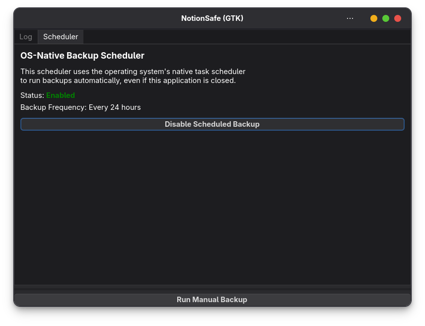

Usage
Learn how to manage your manual and automatic backups efficiently with NotionSafe.
Manual Backups
If you want to trigger a backup immediately, click the "Start Backup" button on the main dashboard. This is useful when you've just finished a large project in Notion and want to capture its state right away.

Automatic Backups (Scheduled)
Automatic backups are the core feature of NotionSafe. Based on the frequency you chose in the Configuration Wizard, the app will run silently in the background.
Windows (Task Scheduler)
On Windows, NotionSafe creates a native Task Scheduler task. This task runs even if the app's main GUI is closed. You can verify it by opening Task Scheduler and looking for the "NotionSafe Backup" task.
Linux (systemd)
On Linux, NotionSafe uses systemd user timers. These are highly efficient and run under your user context without requiring root privileges.
- Check timer status:
systemctl --user list-timers - Check service logs:
journalctl --user -u notionsafe-backup.service
Checking Backup Logs
The "Logs" tab in the main interface shows the history of your recent backups. If a backup fails (e.g., due to an internet outage), you'll see a clear error message here.

Where are my files?
By default, backups are saved in a subfolder named snapshots/ within your backup path. Each backup is a timestamped folder containing Markdown files for pages and CSV files for databases.